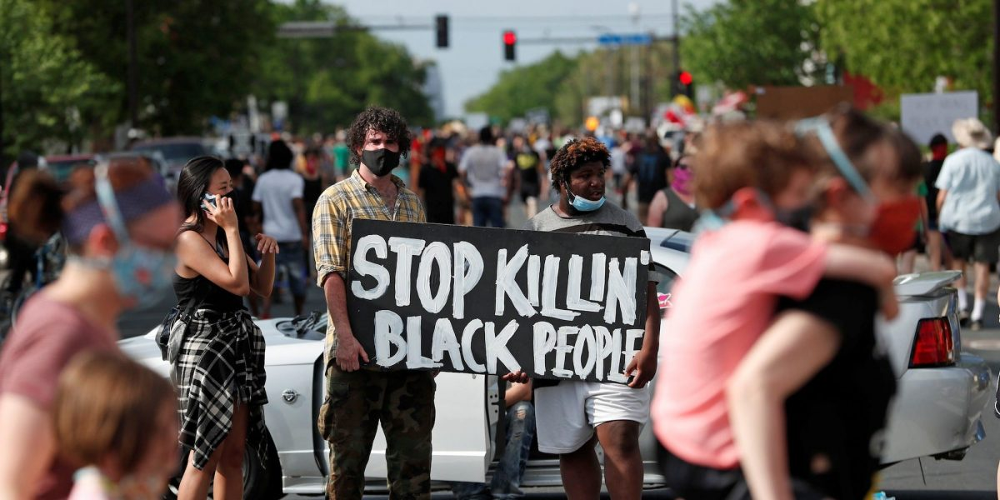

What is Going On? Covid-19?
June 2, 2020
SummaryMalaysia’s strategies in attempting to break the chain of infection appears to be successful so far.We believe the government’s actions are proving effective in curbing the spread and intensity of the epidemic. Mortality rates in Malaysia are low.Despite being forced to remain in isolation, the pandemic has brought Malaysians closer together – from government, and front liners, to activists and the public – in the war against the COVID-19 virus. COVID-19 is an infectious disease caused by a newly discovered strain of coronavirus, a type of virus known to cause respiratory infections in humans.
This new strain was unknown before December 2019, when an outbreak of a pneumonia of unidentified cause emerged in Wuhan, China.The first case of COVID-19 in Malaysia was detected on 24 January 2020. The WHO Country Office in Malaysia has been working closely with the Ministry of Health to respond to this outbreak. Now Covid-19 deaths have decreased. What makes me so touched is when outsiders are so touched by what Malaysia has done. Check out for this video.
p/s: HANG IN THERE EVERYONE. WE CAN DO THIS!!!
Racist? What is wrong with "Black People?"
June 2, 2020
Death of George Floyd
On May 25,2020 African-American man was killed in the Powderhorn community of Minneapolis, Minnesota.
To me this is very cruel. Every mistake will be punished but what has happened is extremely unfair to George. Now many people are protesting for justice for a black man who died because of shortness of breath. It is very sad when someone dies in a wrong way. Many were impressed and reacted to what is happening now including artists overseas . So being a colored person is not a barrier for us to be friends and family. Attitude must be taken care of, so that it will not be contaminated later. Here I put one of the really cute videos.
'Put aside the color of human skin and love each other'
Different skin color? No problem!!!
Words By Me
Hi everyone!!! I am Nur Syahirah and I'm a newbie blogger who wants to start writing. If you have any suggestions please email me or on social media.
Thank You.
#StaySafe